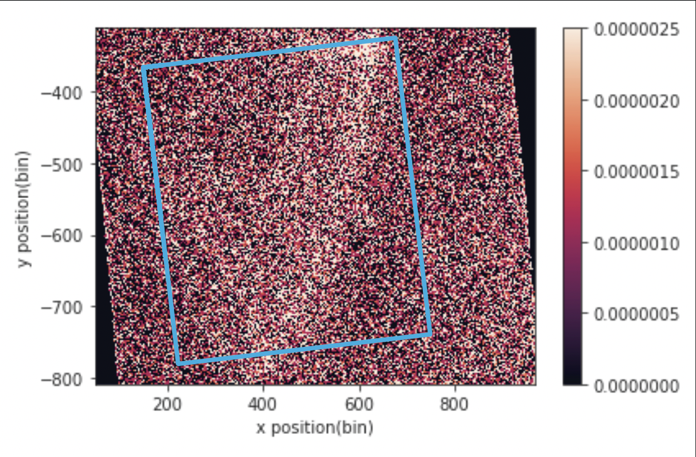

Modern perception and multi-modal models are only as good as the raw sensor data fed into them. When physical sensors generate massive, degraded data streams, isolating high-fidelity signal from ambient noise becomes the central engineering bottleneck.
I built high-throughput computer vision and signal processing pipelines to tackle over 20 TB of corrupted ultrafast laser diffraction imagery, resulting in a co-authored publication in Science.
Key highlights of the pipeline:

Whether you are mining subtle patterns across multi-modal sensor streams or training vision-language models on terabyte-scale messy spatial data, robust preprocessing and domain-adapted representation pipelines make or break downstream intelligence.
I specialize in building production-ready vision and signal mining systems that transform noisy, corrupted physical signals into structured, actionable representations. If your team is tackling large-scale vision,multimodal representation, or sensor processing challenges, let’s connect!